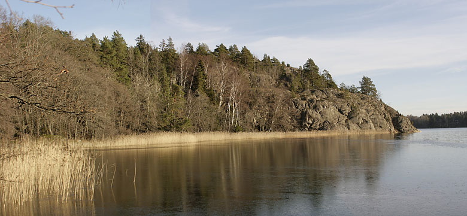
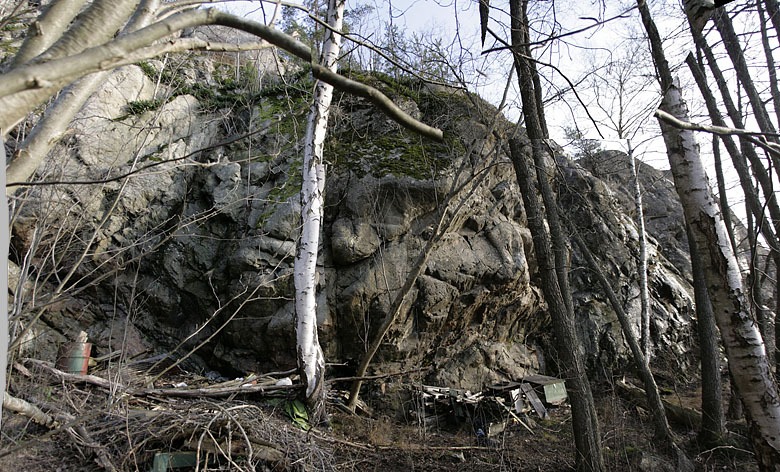

Lat: 59.30855566192222 Long: 18.43553066253662
Ny oklättrad klippa nära Mölnvik köpcentrum. Klippan är överhängande, ca 10m hög. Ganska uppbruten men har nog potential för några leder i varierande svårighetsgrad. Tyvärr syns inte den intressantaste delen av klippan på bilden ovan.
Källa:
Vägen är riktigt dålig, om marken är blöt så lämna sportbilen hemma eller gå från köpcentrumet.
Klippan är högre och mer överhängande än vad den ser ut att vara på bilden.
Inga än så länge!
Kategori:Nacka-Värmdö
Kategori:Stockholm
Kategori:Överhäng
Kategori:Oklättrat
Copyright (C) Permission is granted to copy, distribute and/or modify this document under the terms of the GNU Free Documentation License, Version 1.3